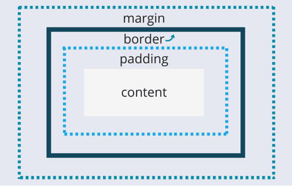

Model pudełkowy (ang. Box Model) w CSS to sposób, w jaki przeglądarki interpretują rozmiar i przestrzeń zajmowaną przez element HTML. Każdy element traktowany jest jak prostokątne pudełko składające się z: zawartości (content), paddingu, obramowania (border) i marginesu (margin).
| Zawartość | Opis |
|---|---|
| content | Zawartość elementu (np. tekst, obrazek) |
| padding | Marginesy wewnętrzne – odstęp między zawartością a obramowaniem |
| border | Obramowanie wokół paddingu i zawartości – ma styl i kolor |
| margin | Margines zewnętrzny – pusty, przezroczysty obszar wokół elementu |
Uwaga 1: Padding, border i margin mogą mieć wartość 0.
Uwaga 2: Tło elementu nie dotyczy marginesów zewnętrznych, które są zawsze przezroczyste.
